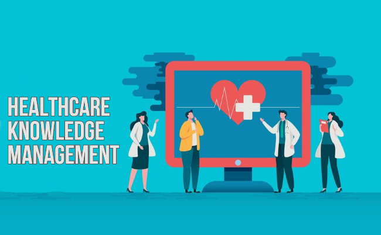

What Is The Need For Healthcare Knowledge Management?
Healthcare knowledge management is one of the most important decisions your healthcare institution can make. The decision to invest in healthcare knowledge management systems is often an easy choice for healthcare institutions, as knowledge management systems often pay for themselves in just a few years. However, when making any big investment, there are a number of factors that must be considered.
The ongoing healthcare crisis and the rapidly growing costs of healthcare has forced many of us to take a more active role in our healthcare and to educate ourselves on various aspects of our healthcare systems. This has led to the creation of healthcare centers and centers for health education and knowledge management.
Encourage innovation
The healthcare knowledge management system of tomorrow will be one that's based on various types of AI and Machine Learning robotization, and the value and relevance of these technologies will only rise as we proceed into the future.
Avoid malpractice
Healthcare is constantly evolving and changing, and while patient safety is a key goal, there are other concerns that must be addressed as well. Malpractice is a huge concern in the field, and it's a serious issue for healthcare organizations.

Electronic Health Records
One of the main innovations in modern healthcare is the electronic health record (EHR), which is used in the delivery of patient care and helps medical professionals and staff to share information and insights on surgeries. Healthcare organizations take advantage of EHR software to manage and share patient and healthcare provider info and to improve patient safety and quality of medical care. An EHR is also utilized by health care systems to manage the care of patients with chronic conditions, uncommon disorders, and complex needs.
Cloud Technology
Cloud technology lets users, devices, and applications interact seamlessly. Cloud-enabled applications, for example, can save data locally, yet access it remotely, protecting users' privacy and preventing data loss.This technology has revolutionized healthcare, allowing patients to access medical records, medical practitioners to give patient-specific instructions, and personnel to collaborate on work projects.
Information Technology
Information technology (IT) is part of modern healthcare that is improving in usage. With the growing advancement of new advances, more ways are being developed of providing support and care, but there's also a rising requirement for more details on these advancements.
The need for Healthcare Knowledge Management (HKM) is demonstrated by the changing healthcare industry. Healthcare companies are constantly looking for new ways to reduce costs. Allowing healthcare specialists to collaborate can save time and reduce costs. HKM can help healthcare organizations provide better care at a lower cost. The healthcare field continues to change. The need for HKM continues to grow.